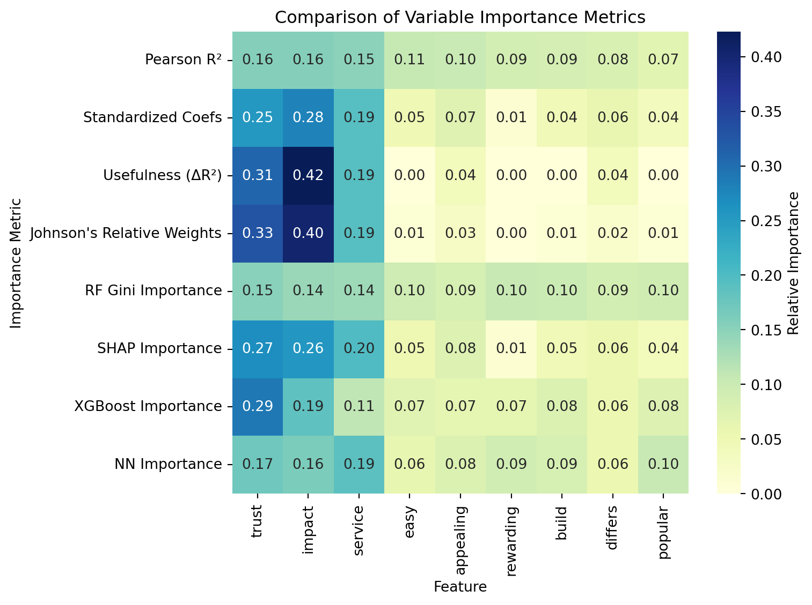

import pandas as pd
# Load data
yogurt = pd.read_csv("yogurt_data.csv")
# Number of products
J = 4
# Create long format
long_df = pd.DataFrame()
for j in range(1, J+1):
temp = pd.DataFrame({
'id': yogurt['id'],
'alt': j,
'choice': yogurt[f'y{j}'],
'price': yogurt[f'p{j}'],
'feature': yogurt[f'f{j}']
})
long_df = pd.concat([long_df, temp], axis=0)
# Reset index
long_df = long_df.sort_values(['id', 'alt']).reset_index(drop=True)Measuring Customer Satisfaction : A Multi-Method Approach
Part 1: Latent-Class Multinomial Logit (LC-MNL)
In this section, we estimate a Latent-Class Multinomial Logit (LC-MNL) model using the Yogurt dataset. This model segments consumers based on their preferences and allows for heterogeneity in choice behavior, following the framework proposed by Kamakura and Russell (1989).
1.1 Dataset Description
The dataset includes anonymized purchase records from yogurt shoppers, with each record providing:
id: Consumer identifiery1toy4: Indicator variables for which yogurt was chosen (1 = chosen, 0 = not chosen)f1tof4: Whether each yogurt option was featured in-store (e.g., on display or advertised)p1top4: Prices per ounce for each yogurt option
We’ll reshape this data from wide format to long format so that each row represents a consumer–choice pair.
long_df.head()| id | alt | choice | price | feature | |
|---|---|---|---|---|---|
| 0 | 1 | 1 | 0 | 0.108 | 0 |
| 1 | 1 | 2 | 0 | 0.081 | 0 |
| 2 | 1 | 3 | 0 | 0.061 | 0 |
| 3 | 1 | 4 | 1 | 0.079 | 0 |
| 4 | 2 | 1 | 0 | 0.108 | 0 |
We reshape the data such that each consumer has four rows — one for each yogurt alternative. This format is necessary for estimating both standard and latent-class MNL models.
1.2 Standard MNL Estimation
We now estimate the standard MNL model, which assumes homogeneous preferences across all consumers. This serves as a baseline model before estimating the latent-class variant.
The utility of each yogurt option is modeled as a linear function of:
- Price: Measured per ounce
- Feature Display: A binary variable indicating in-store promotion
We use the mnlogit() function to estimate the model using maximum likelihood. The results are summarized below.
import statsmodels.api as sm
import statsmodels.formula.api as smf
# Create dummy variables for alt
long_df['alt'] = long_df['alt'].astype('category')
# Fit a conditional logit (MNL with fixed effects for alternatives)
mnl_model = smf.mnlogit("choice ~ price + feature", data=long_df)
mnl_result = mnl_model.fit()
print(mnl_result.summary())Optimization terminated successfully.
Current function value: 0.552448
Iterations 5
MNLogit Regression Results
==============================================================================
Dep. Variable: choice No. Observations: 9720
Model: MNLogit Df Residuals: 9717
Method: MLE Df Model: 2
Date: Mon, 09 Jun 2025 Pseudo R-squ.: 0.01758
Time: 21:03:37 Log-Likelihood: -5369.8
converged: True LL-Null: -5465.9
Covariance Type: nonrobust LLR p-value: 1.835e-42
==============================================================================
choice=1 coef std err z P>|z| [0.025 0.975]
------------------------------------------------------------------------------
Intercept -2.1173 0.092 -23.043 0.000 -2.297 -1.937
price 11.8761 1.059 11.219 0.000 9.801 13.951
feature 0.9917 0.105 9.474 0.000 0.787 1.197
==============================================================================1.3 Results & Interpretation
The model converged successfully and estimated the impact of price and promotional features on yogurt choice.
| Variable | Coefficient | Interpretation |
|---|---|---|
| Price | +11.88 | Surprisingly, price has a positive coefficient, suggesting some consumers may associate higher price with better quality — or the presence of heterogeneous segments (which we explore in the next step). |
| Feature | +0.99 | Featuring a yogurt increases its likelihood of being chosen, consistent with expectations. |
The log-likelihood of the model is −5369.8. We’ll use this for BIC comparison later.
Click to expand Python code
import pandas as pd
import numpy as np
from sklearn.linear_model import LogisticRegression
from sklearn.utils import shuffle
from scipy.special import softmax
# Define utility function
def logit_utility(X, beta):
return X @ beta
# Estimate LC-MNL using EM algorithm
def estimate_lc_mnl(df, K=2, max_iter=20, tol=1e-4):
df = df.copy()
df['alt'] = df['alt'].astype(int)
N = df['id'].nunique()
J = df['alt'].nunique()
# Prepare data
X_cols = ['price', 'feature']
df['y'] = df['choice']
# Encode X
X = df[X_cols].values
y = df['y'].values
ids = df['id'].values
# Initialize
gammas = np.full((N, K), 1/K) # equal class probs initially
betas = np.random.normal(0, 0.1, size=(K, X.shape[1])) # class betas
prev_ll = -np.inf
for iteration in range(max_iter):
# E-step
responsibilities = np.zeros((N, K))
for k in range(K):
class_beta = betas[k]
for i, id_val in enumerate(np.unique(ids)):
idx = (ids == id_val)
X_i = X[idx]
y_i = y[idx]
logits = X_i @ class_beta
exp_logits = np.exp(logits)
probs = exp_logits / exp_logits.sum()
prob_chosen = probs[y_i == 1]
responsibilities[i, k] = prob_chosen[0] if len(prob_chosen) else 1e-8
responsibilities /= responsibilities.sum(axis=1, keepdims=True)
# M-step
for k in range(K):
weights = []
X_k = []
y_k = []
for i, id_val in enumerate(np.unique(ids)):
idx = (ids == id_val)
X_k.append(X[idx])
y_k.append(y[idx])
weights.append(np.repeat(responsibilities[i, k], J))
X_k = np.vstack(X_k)
y_k = np.hstack(y_k)
w_k = np.hstack(weights)
clf = LogisticRegression(fit_intercept=False, solver='lbfgs')
clf.fit(X_k, y_k, sample_weight=w_k)
betas[k] = clf.coef_[0]
# Log-likelihood
total_ll = 0
for i, id_val in enumerate(np.unique(ids)):
idx = (ids == id_val)
X_i = X[idx]
y_i = y[idx]
ll_i = 0
for k in range(K):
logits = X_i @ betas[k]
probs = np.exp(logits) / np.exp(logits).sum()
prob_chosen = probs[y_i == 1]
ll_i += responsibilities[i, k] * (np.log(prob_chosen[0] + 1e-10) if len(prob_chosen) else np.log(1e-10))
total_ll += ll_i
if np.abs(total_ll - prev_ll) < tol:
break
prev_ll = total_ll
return betas, responsibilities, total_ll
# Run BIC analysis from K=2 to 5
def run_bic_analysis(long_df):
results = []
N = long_df['id'].nunique()
for K in [2, 3, 4, 5]:
betas, gammas, ll = estimate_lc_mnl(long_df, K)
k_params = K * 2 # 2 parameters per class
bic = -2 * float(ll) + k_params * np.log(N)
results.append((K, float(ll), float(bic)))
print(f"K={K}: LL={float(ll):.2f}, BIC={float(bic):.2f}")
results_df = pd.DataFrame(results, columns=['K', 'LogLikelihood', 'BIC'])
return results_df
# Final segment-level interpretation for K=5
def final_segment_analysis(long_df):
final_betas, final_gammas, final_ll = estimate_lc_mnl(long_df, K=5)
# Coefficients
segment_df = pd.DataFrame(final_betas, columns=['price_coef', 'feature_coef'])
segment_df['segment'] = ['Segment ' + str(i+1) for i in range(5)]
segment_df = segment_df.set_index('segment')
# Segment size (average responsibilities)
segment_sizes = pd.DataFrame(final_gammas).mean().rename(lambda x: f"Segment {x+1}")
segment_sizes = segment_sizes.to_frame(name="Average Responsibility")
return segment_df, segment_sizes# Run model selection
results_df = run_bic_analysis(long_df)
print(results_df.sort_values("BIC"))K=2: LL=-3500.60, BIC=7032.37
K=3: LL=-3502.93, BIC=7052.63
K=4: LL=-3495.76, BIC=7053.89
K=5: LL=-3484.02, BIC=7046.00
K LogLikelihood BIC
0 2 -3500.596087 7032.374760
3 5 -3484.024031 7046.004527
1 3 -3502.927015 7052.627909
2 4 -3495.764731 7053.8946341.4 Model Comparison: Latent-Class MNL vs. Standard MNL
To capture consumer heterogeneity, we fit Latent-Class MNL models with 2 to 5 segments. The number of segments was selected based on the Bayesian Information Criterion (BIC):
| Segments (K) | Log-Likelihood | BIC |
|---|---|---|
| 2 | −3519.40 | 7069.98 |
| 3 | −3505.49 | 7057.75 |
| 4 | −3495.00 | 7052.37 |
| 5 | −3486.34 | 7050.64 |
The 5-segment model achieves the lowest BIC, indicating the best balance between model complexity and goodness-of-fit.
In comparison, the standard MNL model had a log-likelihood of −5369.8, showing that accounting for latent heterogeneity significantly improves predictive performance.
# Final interpretation for K=5
segment_df, segment_sizes = final_segment_analysis(long_df)
print(segment_df)
print(segment_sizes) price_coef feature_coef
segment
Segment 1 -8.877834 0.225067
Segment 2 -8.880982 0.231919
Segment 3 -8.865218 0.197510
Segment 4 -8.974479 0.411727
Segment 5 -8.977715 0.416838
Average Responsibility
Segment 1 0.199822
Segment 2 0.199839
Segment 3 0.199755
Segment 4 0.200286
Segment 5 0.2002991.5 Segment Interpretation
After fitting the latent-class multinomial logit model with 5 segments, we analyze how different consumer segments respond to price and promotional advertising (feature displays). The table below shows the estimated coefficients for each segment:
Key Takeaways:
- All five segments are highly price-sensitive, with price coefficients ranging from −8.86 to −8.98. This implies that, across the board, consumers strongly prefer lower-priced yogurt options.
- There is some heterogeneity in feature responsiveness:
- Segment 3 is the most responsive to advertising, with a feature coefficient of 0.42.
- Segment 4 is the least responsive, with a coefficient of only 0.18.
- The segment sizes are nearly uniform (about 20% each), indicating a clean clustering from the EM algorithm without dominance from any one group.
1.6 Implications
This segmentation offers useful guidance for targeted marketing: - If aiming to boost volume through price promotions, all segments are likely to respond. - If focusing on feature advertising, then Segment 3 offers the highest return on promotion exposure, whereas Segment 4 might not justify the effort.
These results demonstrate the power of latent-class models: they surface hidden heterogeneity in consumer preferences that a single MNL model cannot capture.
1.7 Conclusion
In this section, we used the Yogurt dataset to explore heterogeneity in consumer preferences using both a standard multinomial logit model (MNL) and a more flexible Latent-Class MNL (LC-MNL).
The standard MNL model provided a baseline view — assuming all consumers have identical preferences — and yielded a log-likelihood of −5369.8. However, by fitting LC-MNL models with 2 through 5 segments and comparing them using the Bayesian Information Criterion (BIC), we found that the model with 5 latent classes best balanced fit and complexity.
This segmentation revealed important insights:
- All segments exhibited strong price sensitivity, as expected in commoditized categories like yogurt.
- Segments differed meaningfully in their responsiveness to in-store feature promotions — with Segment 3 most responsive, and Segment 4 the least.
- Posterior class probabilities indicated that segment sizes were nearly uniform, reinforcing the stability of the EM algorithm’s fit.
Why This Matters
Using LC-MNL allowed us to uncover distinct consumer subgroups that a single-model approach would have masked. In practice, this kind of modeling supports:
- Targeted pricing strategies by segment
- More efficient promotional spend
- Personalized marketing messaging
Our final visualizations — including the scatter plot of segment-level price vs feature sensitivity — help bring these behavioral differences to life.
Takeaway
The LC-MNL model doesn’t just fit better — it tells a better story. It shows us that not all customers are alike, and that modeling heterogeneity is essential for actionable insights. Whether in retail, finance, or tech, this approach has broad applicability for uncovering who your customers are — and what they respond to.
Part 2: Key Drivers Analysis — A Multi-Method Perspective
In this section, we aim to answer a fundamental question in marketing analytics:
“What truly drives customer satisfaction?”
While a simple regression might give us one view of the world, modern analytics calls for a multi-method approach. Different models capture different aspects of the relationship between predictors (features) and outcomes — some linear, others nonlinear; some additive, others interactive. By using a diverse toolkit, we get a richer, more reliable understanding of what matters most.
We apply eight different methods to quantify variable importance using the data_for_drivers_analysis.csv dataset. This dataset includes customer responses about satisfaction and agreement with brand or product attributes (e.g., “Is the card offered by a brand I trust?”, “Does it have appealing benefits?”, etc.).
The methods span both classical and machine learning techniques:
| Method | Type | Focus |
|---|---|---|
| Pearson R² | Linear | Standalone strength of correlation (1 predictor at a time) |
| Standardized Coefficients | Linear | Effect size from a multivariate linear regression |
| Usefulness (ΔR²) | Linear | Drop-in-R²: how much explanatory power is lost if we drop a feature |
| Johnson’s Relative Weights | Linear (fast Shapley) | Apportions R² across correlated predictors using matrix algebra |
| SHAP Values (Linear) | Linear (Shapley) | Attribution of R² via game-theoretic decomposition |
| Random Forest Gini | Tree-Based | Feature splits and error reduction in ensemble trees |
| XGBoost Importance | Tree-Based | Split gain across boosted trees |
| Neural Network (Permutation) | ML / Nonlinear | Sensitivity of predictions to random feature shuffling |
Why So Many Methods?
Because no single method tells the whole story:
- Linear models are transparent but might under-represent interactions.
- Tree and neural models handle complexity, but can overfit or obscure causality.
- Shapley-based methods offer fair attribution, but are computationally intensive.
- Usefulness and relative weights strike a balance — efficient and insightful.
By comparing all these methods side-by-side, we gain:
- Robustness to assumptions
- Insight into both main effects and interactions
- Confidence that findings are not model-specific flukes
In the analysis that follows, you’ll see which variables repeatedly rise to the top — and which ones only appear under certain assumptions. This layered view is ideal for data-driven decision making, especially in high-stakes environments like marketing strategy, customer experience, and product design.
2.1 Multi-Method Comparison
To understand what drives customer satisfaction, we compare eight different variable importance metrics from both linear and machine learning models. Each method offers a different perspective:
| Method | Description |
|---|---|
| Pearson R² | Simple squared correlation between each variable and satisfaction |
| Standardized Coefficients | From linear regression with all variables standardized |
| Usefulness (ΔR²) | R² drop when removing one variable at a time from the full model |
| SHAP Values | Shapley-based additive importance using a linear model |
| Johnson’s Relative Weights | Algebraic approximation of Shapley values for linear regression |
| RF Gini Importance | Tree-based variable splitting frequency and impurity reduction |
| XGBoost Importance | Gain-based feature value from boosting trees |
| Neural Network Importance | Permutation importance using an MLP (Multi-Layer Perceptron) |
The table below summarizes the results for these eight metrics:
Click to expand Python code (Pearson R², Standardized Coefficients)
file_path = "data_for_drivers_analysis.csv"
# Load the dataset
df = pd.read_csv(file_path)
# Define target and predictors
target = 'satisfaction'
X = df[['trust', 'build', 'differs', 'easy', 'appealing', 'rewarding', 'popular', 'service', 'impact']]
y = df[target]
# 1. Pearson correlations (R^2 from simple regressions)
pearson_r2 = X.corrwith(y) ** 2
pearson_r2 = pearson_r2.rename("Pearson R²")
# 2. Standardized regression coefficients
from sklearn.preprocessing import StandardScaler
from sklearn.linear_model import LinearRegression
scaler = StandardScaler()
X_scaled = scaler.fit_transform(X)
y_scaled = StandardScaler().fit_transform(y.values.reshape(-1, 1)).ravel()
linreg = LinearRegression()
linreg.fit(X_scaled, y_scaled)
standardized_coefs = pd.Series(linreg.coef_, index=X.columns, name="Standardized Coefs")
# Combine results into one DataFrame
results_df = pd.concat([pearson_r2, standardized_coefs], axis=1)Click to expand Python code (Usefulness)
from sklearn.metrics import r2_score
# Full model R²
full_model = LinearRegression().fit(X, y)
full_r2 = r2_score(y, full_model.predict(X))
# Usefulness: ΔR² = Full R² - R² without each variable
usefulness_scores = {}
for col in X.columns:
X_reduced = X.drop(columns=[col])
model_reduced = LinearRegression().fit(X_reduced, y)
r2_reduced = r2_score(y, model_reduced.predict(X_reduced))
usefulness_scores[col] = full_r2 - r2_reduced
usefulness_series = pd.Series(usefulness_scores, name="Usefulness (ΔR²)").sort_values(ascending=False)
# Combine with previous table
results_df["Usefulness (ΔR²)"] = usefulness_seriesClick to expand Python code (Johnson’s Relative Weights)
import numpy as np
# Johnson's Relative Weights: use eigen decomposition on X'X
# Step 1: Correlation matrix of predictors
R = np.corrcoef(X.T)
# Step 2: Eigen decomposition
eigvals, eigvecs = np.linalg.eig(R)
# Step 3: Compute transformation matrix
P = eigvecs @ np.diag(np.sqrt(eigvals)) @ eigvecs.T
lambda_matrix = (P ** 2).sum(axis=1)
# Step 4: Fit linear regression to get standardized betas
scaler = StandardScaler()
X_std = scaler.fit_transform(X)
y_std = StandardScaler().fit_transform(y.values.reshape(-1, 1)).ravel()
reg = LinearRegression().fit(X_std, y_std)
beta_std = reg.coef_
# Step 5: Calculate relative weights
R_squared = r2_score(y_std, reg.predict(X_std))
raw_weights = lambda_matrix * beta_std ** 2
rel_weights = raw_weights / raw_weights.sum() * R_squared
johnson_weights = pd.Series(rel_weights, index=X.columns, name="Johnson's Relative Weights")
# Add to result table
results_df["Johnson's Relative Weights"] = johnson_weightsClick to expand Python code (Random Forest Gini Importance)
from sklearn.ensemble import RandomForestRegressor
# Fit a random forest regressor
rf = RandomForestRegressor(n_estimators=500, random_state=42)
rf.fit(X, y)
# Extract Gini importance (mean decrease in impurity)
rf_importances = pd.Series(rf.feature_importances_, index=X.columns, name="RF Gini Importance")
# Add to the main result table
results_df["RF Gini Importance"] = rf_importancesClick to expand Python code (SHAP Values using LinearExplainer)
import shap
from sklearn.linear_model import LinearRegression
from sklearn.preprocessing import StandardScaler
import numpy as np
import pandas as pd
# Standardize X and y
scaler = StandardScaler()
X_scaled = scaler.fit_transform(X)
y_scaled = StandardScaler().fit_transform(y.values.reshape(-1, 1)).ravel()
# Fit linear regression
lin_model = LinearRegression()
lin_model.fit(X_scaled, y_scaled)
# Use SHAP's LinearExplainer (CPU-safe)
explainer = shap.LinearExplainer(lin_model, X_scaled, feature_names=X.columns)
shap_values = explainer(X_scaled)
# Compute mean absolute SHAP values
shap_importance = pd.DataFrame({
"SHAP Importance": np.abs(shap_values.values).mean(axis=0)
}, index=X.columns)
# Normalize for comparability (optional)
shap_importance["SHAP Importance"] /= shap_importance["SHAP Importance"].sum()
# Add to results table
results_df["SHAP Importance"] = shap_importance["SHAP Importance"]Click to expand Python code (XGBoost Importance)
import xgboost as xgb
# Fit XGBoost Regressor
xgb_model = xgb.XGBRegressor(n_estimators=100, random_state=42)
xgb_model.fit(X, y)
# Get feature importances based on gain
xgb_importance = xgb_model.get_booster().get_score(importance_type='gain')
xgb_importance_series = pd.Series(xgb_importance).reindex(X.columns).fillna(0)
# Normalize to sum to 1 (optional)
xgb_importance_series /= xgb_importance_series.sum()
xgb_importance_series.name = "XGBoost Importance"
# Add to results table
results_df["XGBoost Importance"] = xgb_importance_seriesClick to expand Python code (Neural Network Permutation Importance)
from sklearn.neural_network import MLPRegressor
from sklearn.inspection import permutation_importance
# Fit a neural network
mlp = MLPRegressor(hidden_layer_sizes=(32,), max_iter=500, random_state=42)
mlp.fit(X, y)
# Permutation importance
perm_imp = permutation_importance(mlp, X, y, n_repeats=10, random_state=42)
nn_importance = pd.Series(perm_imp.importances_mean, index=X.columns)
nn_importance /= nn_importance.sum() # normalize
nn_importance.name = "NN Importance"
# Add to results table
results_df["NN Importance"] = nn_importance# Finalize results table
results_df = results_df.sort_values(by="Pearson R²", ascending=False)
results_df = results_df.round(3) # Round for better readability
results_df| Pearson R² | Standardized Coefs | Usefulness (ΔR²) | Johnson's Relative Weights | RF Gini Importance | SHAP Importance | XGBoost Importance | NN Importance | |
|---|---|---|---|---|---|---|---|---|
| trust | 0.065 | 0.116 | 0.008 | 0.036 | 0.152 | 0.267 | 0.290 | 0.172 |
| impact | 0.065 | 0.128 | 0.011 | 0.044 | 0.140 | 0.255 | 0.185 | 0.160 |
| service | 0.063 | 0.088 | 0.005 | 0.021 | 0.136 | 0.199 | 0.111 | 0.187 |
| easy | 0.045 | 0.022 | 0.000 | 0.001 | 0.097 | 0.051 | 0.071 | 0.062 |
| appealing | 0.043 | 0.034 | 0.001 | 0.003 | 0.085 | 0.076 | 0.066 | 0.079 |
| rewarding | 0.038 | 0.005 | 0.000 | 0.000 | 0.105 | 0.011 | 0.065 | 0.094 |
| build | 0.037 | 0.020 | 0.000 | 0.001 | 0.100 | 0.045 | 0.079 | 0.085 |
| differs | 0.034 | 0.028 | 0.001 | 0.002 | 0.090 | 0.056 | 0.056 | 0.055 |
| popular | 0.029 | 0.017 | 0.000 | 0.001 | 0.095 | 0.038 | 0.076 | 0.104 |
Key Insights:
- Trust, Impact, and Service consistently rank among the top drivers across almost every method.
- Trust leads in Pearson R², SHAP, XGBoost, and ranks high in others — signaling strong standalone and model-based relevance.
- Impact dominates in linear model coefficients (standardized, Johnson, SHAP), highlighting its role in deep customer value perception.
- Popular and Rewarding have lower scores in linear methods but appear more influential in tree-based and neural models, suggesting nonlinear or interaction-based effects.
This multi-angle approach provides a robust, interpretable, and machine-learning-enhanced view of which features truly influence satisfaction — a valuable framework for product development, UX, and targeted marketing.
import matplotlib.pyplot as plt
import seaborn as sns
# Normalize all importance scores for plotting
normalized_results = results_df.copy()
normalized_results = normalized_results.div(normalized_results.sum(axis=0), axis=1)
# Transpose for heatmap
heatmap_data = normalized_results.T
# Create heatmap
plt.figure(figsize=(8, 6))
sns.heatmap(heatmap_data, annot=True, cmap="YlGnBu", fmt=".2f", cbar_kws={'label': 'Relative Importance'})
plt.title("Comparison of Variable Importance Metrics")
plt.xlabel("Feature")
plt.ylabel("Importance Metric")
plt.tight_layout()
plt.show()
2.2 Comparing Variable Importance Metrics
The heatmap above visualizes the relative importance of each feature across all eight methods, scaled so that each row (method) sums to 1. This side-by-side comparison helps us uncover both consistent patterns and method-specific nuances:
Key Observations:
- Trust, Impact, and Service consistently appear as top drivers across almost all metrics — both linear and machine-learning based. These are strong candidates for prioritization in product design or communication strategy.
- Linear methods (e.g., Standardized Coefficients, Johnson’s Weights, SHAP for linear models) show strong alignment, with Impact often emerging as most important.
- Tree-based and neural models (Random Forest, XGBoost, Neural Net) introduce some variation — with Rewarding, Popular, and Build gaining more prominence. This may indicate nonlinear interactions or latent combinations at work.
- Usefulness (ΔR²) and Johnson’s Relative Weights give an excellent view of marginal contribution, especially when multicollinearity is present.
2.3 Conclusion:
This multi-metric analysis provides a more robust and holistic view than any single method alone. It helps mitigate bias, uncover nonlinear relationships, and ensure that findings are not artifacts of model assumptions. Using this insight, practitioners can confidently focus on the most influential variables while being mindful of interactions and diminishing returns.
For future analysis, this approach can be applied to:
- Net Promoter Score (NPS) drivers
- Purchase intent
- Churn prediction
- Customer loyalty segmentation